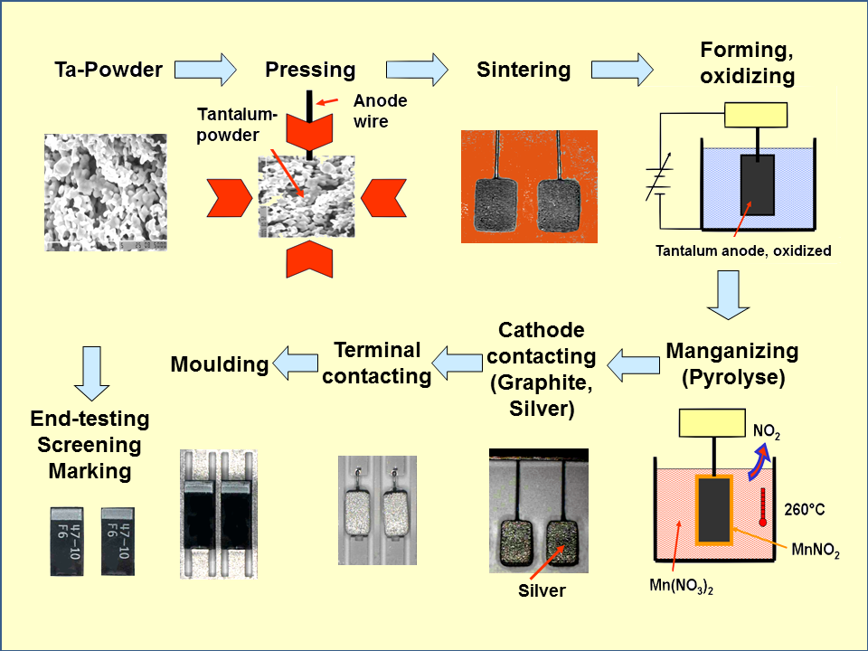
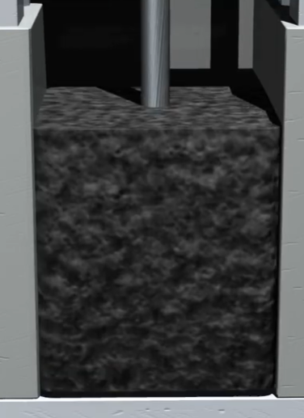
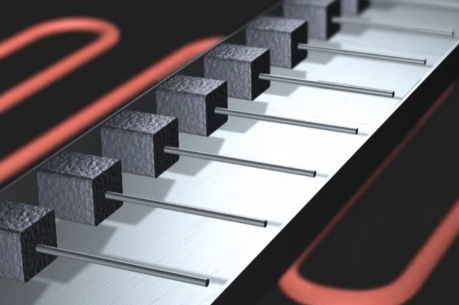
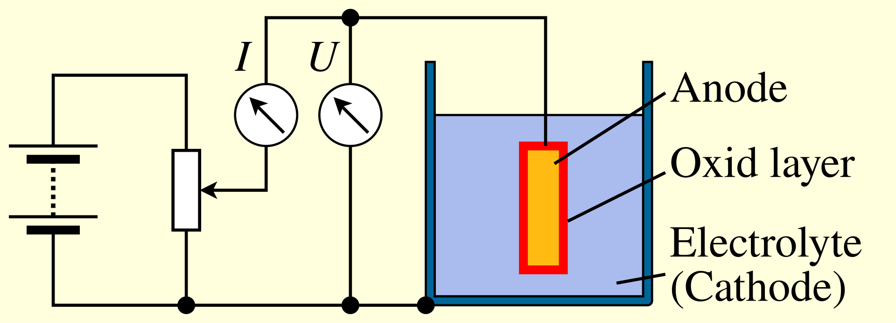
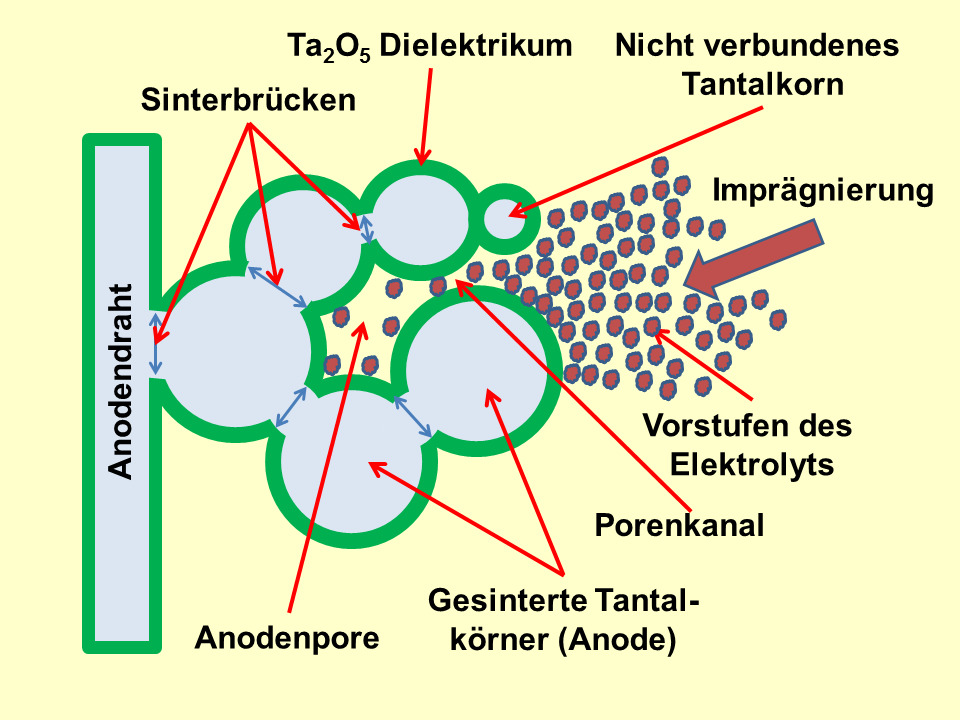
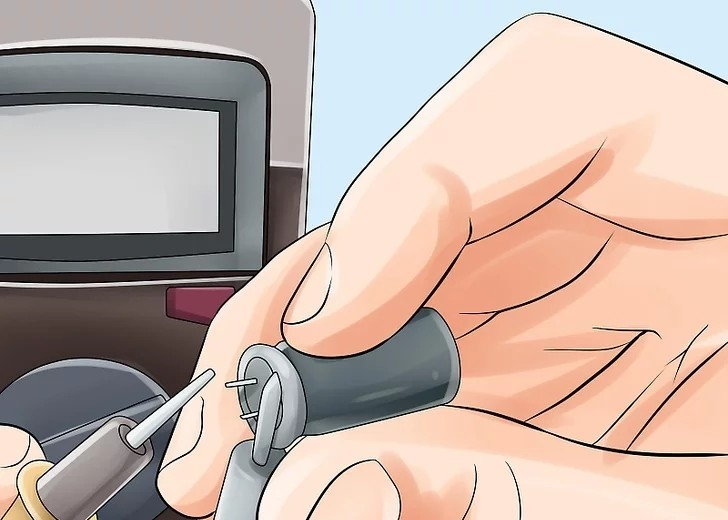
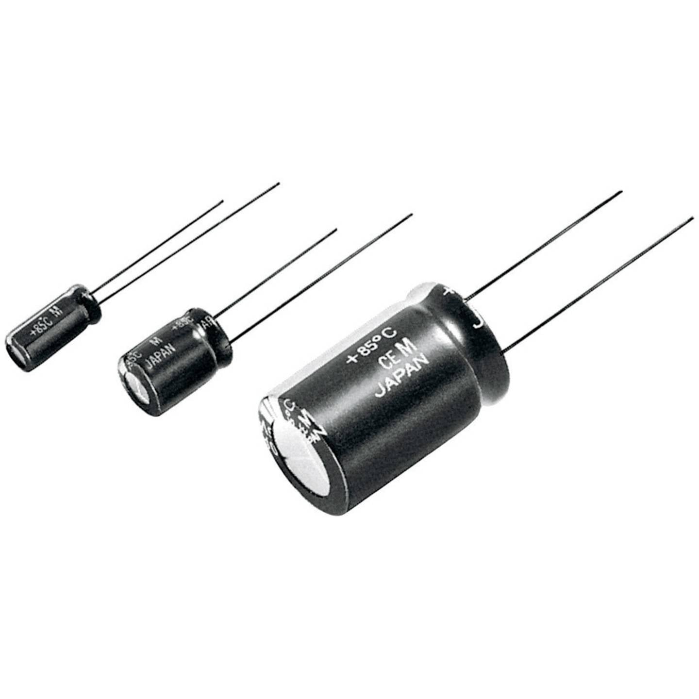

Productie van de tantalumcondensator
Verwerking tot component en integratie in elektronica.
Tantalumcondensatoren zijn onmisbaar in netwerkrouters wegens hun hoge capaciteit per volume, lage zelfontlading en uitstekende stabiliteit. Ze worden echter geproduceerd via een ingewikkeld en energie-intensief proces dat kan verschillen van producent tot producent. Hieronder wordt het meest gangbare productieproces uitgelegd.

-
Fase 1: Voorbereiding van het mengsel
Tantalum wordt in poedervorm aangevoerd in de fabriek, waar het gemengd wordt met een organisch bindmiddel en samengedrukt wordt tot een geheel rond een anodedraad van tantalum.

Bron: AVX | Tantalum Capacitor Manufacturing Process (KYOCERA AVX)
-
Fase 2: Thermische verwerking
Het samengeperste tantalum wordt eerst opgewarmd tot 200°C om het organische bindmiddel te verwijderen en daarna gesinterd op 1600°C. Daardoor hechten de korrels zich aan elkaar zonder hun porositeit te verliezen.

Bron: AVX | Tantalum Capacitor Manufacturing Process (KYOCERA AVX)
-
Fase 3: Elektrolytische anodisatie
De balkjes worden daarna elektrolytisch geanodiseerd. Daarbij vormt zich een diëlektrische laag van tantaalpentoxide op het oppervlak wanneer de componenten in een elektrolyt worden ondergedompeld.

-
Fase 4: Impregnatie en coating
Daarna worden de balkjes geëmpregneerd met een geleidend polymeer, zodat ze geleidend zijn aan de binnenkant en tegelijk bescherming bieden aan de buitenkant. Vervolgens krijgen ze ook een koolstoflaag en een zilvercoating.

-
Fase 5: Elektrische test
Hierna is de condensator functioneel voor een eerste test. Zo wordt gecontroleerd of de kwaliteit voldoende hoog is voordat de component verder wordt afgewerkt.

-
Fase 6: Inkapseling en markering
Tot slot wordt de tantalumcondensator afgewerkt met een laag beschermende epoxyhars en voorzien van markeringen, bijvoorbeeld via lasergravering. Daarna is hij klaar voor gebruik in elektronische apparatuur.
